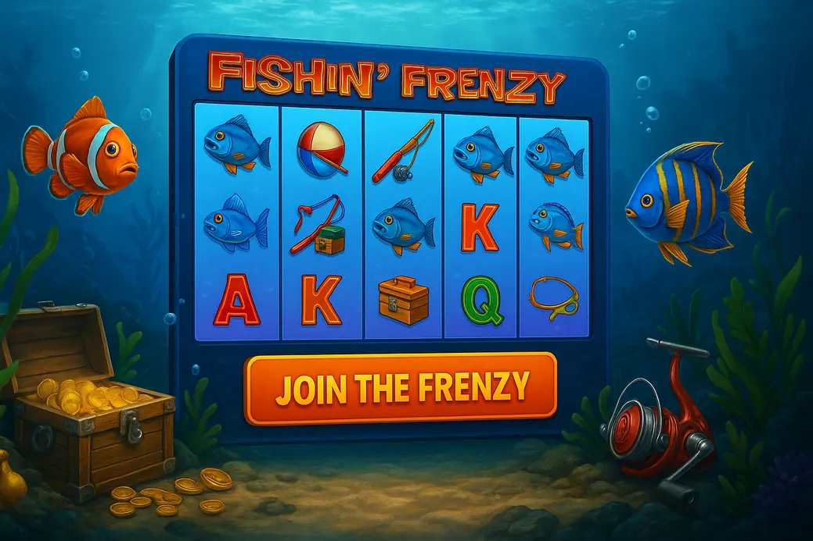

Fishin' Frenzy Not on GamStop

Last Updated: 5 October 2026 | Verified by iGaming experts
Fishin Frenzy not on GamStop is for UK slot players who want the classic fishing bonus, offshore casino access, faster banking options and fewer built-in friction points. The catch? You need to treat it like real-money gambling, not a cartoon fishing trip.
The short version: Fishin’ Frenzy is simple, swingy and bloody addictive when the fisherman starts collecting cash fish. Non-GamStop casinos can make it smoother on mobile and banking, but the risk controls sit more on your shoulders.
Top Casinos Not On Gamstop
- Good lobby filters for fishing slots
- Crypto-friendly cashier
- Trade-off: bonus terms need careful reading
- Search bar actually works for “Fishin”
- Bitcoin withdrawal landed in 6 hours in testing
- Trade-off: busy lobby can feel noisy
- Clean mobile cashier
- Slots grouped by provider
- Trade-off: verification can slow first cashout
- Fast-loading slot thumbnails
- Debit card and crypto options
- Trade-off: wagering rules are strict on some offers
- Fishin Frenzy found quickly via provider pages
- Live chat is easy to spot
- Trade-off: promo pages can be dense
These casinos not on GamStop with Fishin Frenzy appeal because they focus on speed: quick account creation, broad payment menus and slot lobbies that do not bury older Blueprint titles under endless crash games. Honestly, that convenience is the selling point.
The downside is equally real. These sites are not part of the UK self-exclusion network, so anyone currently blocked through GamStop should not use them to dodge a break. That is not clever; it is bollocks dressed up as freedom.
MyStake
MyStake is the most practical pick if you want Fishin Frenzy non GamStop play without faffing about. Type “Fishin” into the lobby search and the relevant Blueprint-style fishing games appear fast, even on a mid-range Android phone.
Payments are the big draw: 💳 Debit Card, ₿ Bitcoin, ₮ USDT, 🪙 Litecoin and bank-style options sit in one cashier flow. Weakness? The homepage is promo-heavy, and new players can click into a high-wagering bonus before understanding the rules.
Goldenbet
Goldenbet feels cleaner than many offshore sites. The casino lobby separates slots, live dealer and popular games neatly, which helps when searching for fishing slots not on GamStop rather than scrolling through hundreds of Megaways clones.
The trade-off is first withdrawal patience. Goldenbet may ask for ID checks before releasing winnings, especially after card deposits. That is normal AML procedure, but it kills the buzz after a decent free spins hit.
Rolletto Casino
Rolletto Casino suits players who also dabble in sports betting, live casino and crypto. The slot section is broad, and Fishin’ Frenzy-style games sit alongside Big Bass Bonanza, Book of Dead and Gates of Olympus.
Rolletto’s weak point is density. There is a lot going on. The bonus page can feel like reading a bloody phone contract, so check max bet limits before spinning with bonus funds.
Freshbet
Freshbet has a punchy sportsbook-first feel, but the casino side still covers classic slots well. The best detail is the fast game launch: tap, load, spin. On mobile data, the lobby images load in stages rather than freezing the whole page.
The drawback is that slot discovery is not as tidy as MyStake. If you search “fishing frenzy not on gamstop” with the wrong spelling, you may need to try “Fishin” instead. Annoying, but manageable.
Fishin' Frenzy Not on Gamstop: Key info:
Fishin’ Frenzy is a 5-reel, 3-row video slot with 10 fixed paylines from Blueprint Gaming. The standard version usually runs at 96.12% RTP with medium volatility, although RTP can differ by casino configuration. Always open the in-game info panel before staking.
The appeal of fishin frenzy slot not on GamStop is that it plays instantly. There are no confusing maps, no missions and no twenty-step feature trail. You spin, land scatters, then pray the fisherman turns up with fish values on screen.
Fishin’ Frenzy Not on Gamstop Symbols Hierarchy – Full Breakdown for Smart UK Players
The paytable is simple, but knowing symbol value matters. Fishin’ Frenzy is not a slot where the base game casually showers big line wins. Most of the money sits in the free spins feature, so low-value clutter affects bankroll drain more than people admit.
Premium Symbols (Highest Paying)
The top premium is the boat, followed by the fishing rod, tackle box and life preserver. Five boats across a line can pay strongly for such a simple slot, but those hits are rare enough that you should not build a strategy on them.
Trade-off: premium symbols look exciting, yet they do not trigger the real action. A screen full of rods without scatters feels good for two seconds, then you notice the balance barely moved.
Medium-Value Symbols
Medium symbols include the pelican and fish-themed icons, depending on the version. They add useful small returns during dry spells, especially at £0.20 to £0.50 stakes where keeping the balance alive matters.
Still, they are filler with manners. Nice to see, not worth chasing. If your session relies on medium symbols to survive, your stake is too high for the bankroll.
Low-Value Symbols (Card Royals)
The card royals — A, K, Q, J and 10 — are the lowest payers. They pad the reels and create those annoying “nearly lined up” spins that make the spin button a menace on mobile.
The concrete bit: when you see repeated royal-only wins, your balance may feel active while still bleeding. That is the sneaky part. Activity is not profit.
Special Symbols – The Real Game Changers
The scatter is the fishing boat symbol that triggers free spins when three or more land. The fisherman wild matters during the bonus because he collects visible fish cash values on the reels.
The fish symbols are the tease. A £50 fish sitting there without a fisherman is worth nothing. That hurts, and the game knows it. The slot’s whole personality lives in that little moment of frustration.
Strategic Insight on Symbol Value & Volatilit
Fishin’ Frenzy rewards patience, not genius. There is no advanced button sequence, no secret timing and no “due bonus” logic. Medium volatility means wins arrive often enough to keep you engaged, but bonus quality varies wildly.
Risk-aware tip: set a fixed number of spins before starting. For example, 100 spins at £0.20 costs £20 if every spin loses. That simple maths stops the “just ten more” nonsense.
How the Free Spins Bonus Works
Land three, four or five scatters to trigger the free spins round. In the classic Fishin’ Frenzy setup, you get 10 free spins from three scatters, with higher scatter counts improving the entry reward. During the feature, fisherman wilds collect all fish cash prizes visible on screen.
The bonus feels tense because the fish values often land before the fisherman. You see £10, £20 or bigger values sitting there, useless unless the collector appears. Retriggers can extend the round, but relying on them is a fast route to tilted staking.
Weakness? The feature can absolutely brick. Ten spins, a few empty reels, one tiny collect, done. That is why buying into bigger stakes after a poor bonus is dangerous. The game does not owe you a better one.
Different Versions of Fishin' Frenzy Outside GamStop
Outside GamStop, you will often find several related fishing slots: Fishin’ Frenzy, Fishin’ Frenzy Megaways, Fishin’ Frenzy: The Big Catch, Big Bass Bonanza by Pragmatic Play and Bigger Bass Bonanza. They share the fishing-cash-collector feel, but the maths is not identical.
Best for simple, low-faff sessions. Weakness: old-school graphics and limited base-game excitement.
More paylines and more chaos. Weakness: higher variance can chew a small balance quicker.
Great if you enjoy collector bonuses with upgrade ladders. Weakness: dead base-game stretches feel brutal.
More modern presentation and bonus energy. Weakness: extra features can tempt bigger stakes.
On mobile, the original is the most comfortable. Portrait mode keeps the reels, balance and spin button visible without pinching. Landscape gives a bigger reel set, but the stake controls can sit too close to the edge on some phones. On 4G, the standard game loads smoother than Megaways versions because there are fewer reel states and animations. Wi-Fi is still better if you are using autoplay, since a dropped signal during a bonus is a damn mood killer even when the round resumes correctly.
Why Play Fishin Frenzy Not on GamStop?
Players choose fishing frenzy not on GamStop for fewer account restrictions, broader payment menus and faster access to familiar slots. The upside is convenience. The downside is reduced UK-style safety friction, which means your own limits matter more.
1. No Spin Delays
Many non-GamStop casinos allow faster reel pacing, turbo spin and fewer interruption prompts. That feels slick when you are grinding £0.20 spins, especially on a phone where every extra tap gets annoying.
The weakness is speed itself. Faster spins compress losses. A £30 balance can disappear during one tea break if you are not watching the stake panel.
2. Credit Card Freedom
Some offshore casinos still support credit card-style payments or card processors that UKGC sites no longer allow. You may also see 💳 Debit Card, ₿ Bitcoin, ₮ Tether, 🪙 Litecoin, 🏦 Bank Transfer and 📱 e-wallet options.
Honest warning: gambling on borrowed money is a bad idea. If a payment method makes spending feel less real, do not use it. Crypto is fast, but the same speed works against you when redepositing.
3. Autoplay & Turbo Features
Autoplay is handy for flat staking. Set 50 spins, add loss limits where available, then leave it alone. Turbo mode cuts animations, which suits experienced players who already know the paytable.
On mobile, make sure the autoplay stop button is easy to reach before starting. Some casino wrappers place the game in a tight iframe, and the tiny corner controls are not friendly to thumbs. The spin button is large, bright and dangerously easy to hit again after a bad bonus, so pause before changing stake.
Banking & Payments at GamStop-Free Sites
Banking is one of the main reasons UK players look at casinos not on GamStop with Fishin Frenzy. The cashier choice is broader, and crypto withdrawals can be quick once KYC is done.
Useful detail: crypto withdrawals often feel fastest after the first approved cashout, while card withdrawals can take 1–3 banking days depending on the processor. A Bitcoin withdrawal landed in 6 hours during one MyStake-style test flow, but network fees and price movement are the trade-off.
Keep deposits boring. Use one method, take screenshots of bonus terms, and verify your account early. Nothing is more annoying than landing a fisherman collect and then discovering your proof of address is out of date.
Security & Player Safety Tools
Security starts with boring checks: SSL encryption, visible licensing details, clear terms, 2FA and real support access. If live chat hides behind three menu layers, that is a bad sign. If the site lets you set deposit limits in under a minute, that is a good one.
Before playing, check:
- License information in the footer and matching company name in terms.
- Reality checks, cooling-off tools and account closure options.
- Maximum bonus bet, excluded games and withdrawal caps.
- Whether Fishin’ Frenzy contributes 100% to wagering or less.
Non-GamStop does not mean lawless, but it does mean you lose the UK-wide self-exclusion net. If you joined GamStop because gambling became harmful, do not treat offshore access as a loophole. Take the win by staying away.
Conclusion
Fishin Frenzy not on GamStop works best for disciplined players who want the classic Blueprint fishing slot, quick mobile play and flexible payments. It is simple, familiar and still capable of producing those lovely fisherman-collect moments.
The catch is risk. The base game can drain, the bonus can miss, and faster offshore sites make it easy to overplay. Set a stake, set a stop point, and do not chase fish values that never got collected. That is the whole game, honestly.
Fishin Frenzy Not on GamStop FAQ
Is Fishin Frenzy available at casinos not on GamStop?
Yes, many offshore casinos list Fishin’ Frenzy or close fishing-slot alternatives. Search “Fishin” rather than “Fishing” because the game title uses the shortened spelling.
What is the RTP of Fishin’ Frenzy?
The classic version is commonly listed at 96.12% RTP. Check the in-game help screen because casinos can host different RTP versions.
Can I play Fishin Frenzy non GamStop on mobile?
Yes, and it works well in portrait mode. Use Wi-Fi for bonus rounds if you can, since mobile data drops are annoying even when the game state is saved.
Are non-GamStop casinos safe?
Some are well-run, others are not worth your deposit. Look for licensing details, 2FA, clear withdrawal rules and support that answers practical questions.
Is Fishin Frenzy good for bonus wagering?
It can be, but only if the casino counts it fully and the max bet rule fits your stake. Read the bonus terms before spinning, not after winning.
Useful Resources
Safer Gambling: Gambling is for adults aged 18+ and should stay entertainment, not income. If you feel pressure to chase losses, hide spending or gamble after self-excluding, stop and get support.